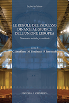

NOVA
2019 - 25 marzo
“Borsa” dell’Unione degli Avvocati Europei (UAE) per giovani avvocati e praticanti abilitati (scadenza: 30 aprile 2019)
- L’UAE (www.uae.lu) ha lanciato un’importante iniziativa destinata ai giovani colleghi (U-35) di tutti gli Stati membri dell’Unione europea e del Consiglio d'Europa: si tratta di presentare entro il 30 aprile 2019, in inglese o francese, un elaborato in materia di “metodi alternativi di risoluzione delle controversie” (ADR).
- Attraverso il seguente link potranno essere consultate tutte le informazioni per saperne di più e partecipare: (https://www.scholarship-uae.lu/).
- Il vincitore (la decisione sarà presa da un Jury entro il prossimo 20 maggio) otterrà una “Borsa” che (inter alia) comprende: iscrizione gratuita per due anni all’UAE e partecipazione gratuita (comprensiva del viaggio e soggiorno) al prossimo Congresso Annuale, che quest’anno (28-29 giugno) si terrà a Napoli e che verterà proprio sulle “ADR”.
2019 - 18 marzo
Corso di formazione in diritto dell’Unione europea a Milano
- Si è svolto a Milano il terzo incontro del Modulo n. 2 “Tutela giurisdizionale e profili sostanziali” del Corso di formazione in diritto dell’Unione europea, organizzato (tra gli altri) dall’ "Ordine degli Avvocati di Milano" e dalla "Fondazione Forense di Milano"
(in allegato la locandina)
.
- L’Avv. Gabriele Donà ha parlato sul tema “Il rinvio pregiudiziale. Presupposti teorici e analisi casi pratici”.
2019 - 28 febbraio
Convegno in materia di diritto penale e diritti fondamentali dell’Unione europea a Padova
- A Padova, l’Avv. Gabriele Donà interviene al Convegno “Le esigenze di sicurezza interna dello Stato in “contrapposizione” con la tutela dei diritti fondamentali dell’Unione europea”, organizzato dalla “Camera Penale di Padova"
(in allegato la locandina)
.
2019 - 15 febbraio
Inaugurazione dell’Anno Giudiziario 2019 a Padova
- Si svolgerà a Padova la conferenza “Le vittime del processo ingiusto”, organizzata dall’Unione Camere Penali Italiane (UCPI)
(in allegato la locandina)
.
- L’Avv. Gabriele Donà porterà i saluti istituzionali quale Presidente dell’Unione degli Avvocati Europei (U.A.E.)
2018 - 1 dicembre
L’AVV. GABRIELE DONÀ NOMINATO PRESIDENTE DELL'UNIONE DEGLI AVVOCATI EUROPEI

- In occasione del Comitato Esecutivo dell’Unione degli Avvocati Europei (UAE), tenutosi il 1 dicembre a Lisbona, è stato eletto il nuovo “Bureau” dell’Associazione.
- L’Avv. Gabriele Donà è stato nominato Presidente dell’UAE (si vedano le notizie pubblicate sulla stampa ==>
-- (sole 24 ore)
-- (il nordest quotidiano)
-- (uae fr)
-- (uae en)
- Il prestigioso incarico durerà due anni.
==> Situs UAE
2018 - 29 ottobre
Conferenza “La giustizia europea come fattore per una più efficace tutela giudiziaria in materia tributaria” a Padova
- Si svolgerà a Padova la Conferenza “La giustizia europea come fattore per una più efficace tutela giudiziaria in materia tributaria”, organizzata dalla “Camera Avvocati Tributaristi Veneto”
(in allegato la locandina)
.
- L’Avv. Wilma Viscardini traccerà un ricordo del Prof. Trabucchi, anche in relazione alle comuni esperienze alla Corte di giustizia.
- L’Avv. Gabriele Donà parlerà sul tema “Giudice tributario e rinvio pregiudiziale alla Corte di giustizia dell’Unione europea: aspetti procedurali e casistica giurisprudenziale”.
2018 - 19 ottobre
Conferenza “Le soupçon” a Marsiglia
- Si svolgerà a Marsiglia la Conferenza internazionale “Le soupçon”, organizzata dall’Unione degli Avvocati europei (UAE)
(in allegato la locandina)
.
- L’Avv. Gabriele Donà parlerà sul tema “L'article 48 de la Charte des droits fondamentaux de l'Union Européenne”.
2018 - 12 settembre
CONVEGNO “ACCERTAMENTO TRIBUTARIO E PROFILI PENALISTICI” A MILANO
- Si è svolto a Milano il Convegno “Accertamento tributario e profili penalistici”, organizzato (tra gli altri) dall’ ”Ordine degli Avvocati di Milano”.
(in allegato la locandina)
.
- L’Avv. Gabriele Donà ha parlato sul tema "Il principio del ne bis in idem nella giurisprudenza europea. Riflessi per l’accertamento tributario”.
2018 - 27 marzo
“Borsa” dell’Unione degli Avvocati Europei (UAE) per giovani avvocati (scadenza 15 maggio 2018)
- L’UAE (www.uae.lu) ha lanciato un’importante iniziativa destinata ai giovani colleghi (U-35) di tutti gli Stati membri dell’Unione europea: si tratta di presentare entro il 15 maggio 2018, in inglese o francese, un elaborato in materia di protezione dei dati.
- Attraverso il seguente link potranno essere consultate tutte le informazioni per saperne di più e per partecipare: (https://www.scholarship-uae.lu/).
- Il vincitore (la decisione sarà presa da un Jury entro il 21 maggio) otterrà una “Borsa” che (inter alia) comprende: iscrizione gratuita per due anni all’UAE e partecipazione gratuita (comprensiva del viaggio e soggiorno) al prossimo Congresso Annuale, che quest’anno (15 giugno) si terrà a L’Aja (nella prestigiosa sede della Corte internazionale di giustizia) e che verterà proprio sulla “Data Protection”.
2018 - 8 marzo
Corso di specializzazione “L’accertamento tributario nella dimensione europea e nazionale” a Ferrara
- Si è svolta a Ferrara la prima giornata del Modulo n. 1 “Principi generali e poteri istruttori” del Corso di specializzazione “L’accertamento tributario nella dimensione europea e nazionale”, organizzato (tra gli altri) dall’”Ordine dei dottori commercialisti ed esperti contabili" di Ferrara .
(in allegato la locandina)
.
- L’Avv. Gabriele Donà ha parlato sul tema "Il primato, le tendenze espansive e le fonti del diritto europeo”.
2017 - 30 settembre
Pubblicato il Commentario "Le regole del processo dinanzi al giudice dell'Unione europea"

- L'opera - la prima di questo genere nella letteratura italiana e tra le prime in Europa - si caratterizza per il "taglio" pratico in ragione dell'ampio ricorso alla giurisprudenza (e alla prassi applicativa) dei giudici dell’Unione..
- L’Avv. Gabriele Donà ha redatto il commento delle norme relative alla fase scritta del procedimento davanti alla Corte di giustizia (artt. 121-127 del Regolamento di procedura).
2017 - 17 giugno
XV STAGE DI DIRITTO DELL’UNIONE EUROPEA A ISCHIA
- Si svolgerà a Ischia il XV Stage di diritto dell’Unione europea “Andrea Cafiero” organizzato dal Consiglio dell’Ordine degli Avvocati di Napoli. Vedasi
la locandina allegata
per l'intero programma.
- L’Avv. Gabriele Donà parlerà sul tema "L’attuazione in Italia della direttiva 2014/104/UE sul risarcimento del danno per violazione del diritto della concorrenza: inquadramento e possibili applicazioni pratiche”.
2017 - 16 marzo
Convegno in materia di contraddittorio preventivo in sede tributaria a Ferrara
- A Ferrara, l’Avv. Gabriele Donà interviene al Convegno “Il contraddittorio endo-procedimentale. Attualità e prospettive a confronto”, organizzato (tra gli altri) dalla "Unione dei giovani dottori commercialisti ed esperti contabili" di Ferrara (in allegato la locandina)
programma Ferrara 16_3_2017.pdf - - - .
2016 - 30 novembre
L’Avv. Wilma Viscardini e il Dr. Gaetano Donà ricevono il “Premio Uniteis 2016"
- In occasione dell’Assemblea Generale della Uniteis e.V. - tenutasi presso "Longarone Fiere" il 30 novembre 2016 - è stato assegnato il "Premio Uniteis 2016” all’Avv. Wilma Viscardini e al Dr. Gaetano Donà "per l’alta professionalità e la grande amicizia dimostrate in 40 anni di collaborazione”.

2016 - 21 novembre
L’Avv. Gabriele Donà confermato Vicepresidente dell'Unione degli Avvocati Europei
- In occasione del Comitato Esecutivo dell’Unione degli Avvocati Europei (UAE), tenutosi il 21 novembre 2016 a Lussemburgo, è stato eletto il nuovo “Bureau” dell’Associazione.
- All’interno del “Bureau”, l’Avv. Gabriele Donà è stato confermato quale Vicepresidente
dell’UAE (si veda notizia pubblicata dal Gruppo editoriale ==> "Il Sole 24 Ore"
- Il prestigioso incarico durerà due anni.
==> Situs UAE
2016 - 18 novembre
Corso di aggiornamento in diritto penale a Milano

- A Milano, l’Avv. Gabriele Donà terrà una lezione su “Giudice penale e rinvio pregiudiziale alla Corte di giustizia dell’Unione europea: aspetti procedurali e recente casistica giurisprudenziale”, nell'ambito del Corso in oggetto organizzato dalla LAF - Libera Associazione Forense (in allegato la locandina)
Corso LAF Milano.pdf - - -
2016 - 23 settembre
Convegno in materia di diritto sportivo in Sicilia
- A Fiumefreddo (Catania), si è tenuto un Convegno in materia di “Discriminazioni nello sport e autonomia dei privati” organizzato dalla Commissione “Diritto dello sport” e dalla Delegazione “Catania e Sicilia orientale” della UAE (in allegato la locandina).
Convegno UAE Fiumefreddo.pdf - - -
- L’Avv. Gabriele Donà ha parlato sul tema “I principi di non discriminazione e di libertà di circolazione degli sportivi professionisti nella giurisprudenza della Corte di giustizia dell'Unione europea”.
2016 - 24 giugno
XXX Congresso Annuale "Unione degli Avvocati Europei" (UAE) ad Alba Iulia
- Si svolgerà ad Alba Iulia (Romania) il XXX Congresso Annuale della UAE. Vedasi le locandine allegate per l'intero programma.
Programme Alba Iulia - FR - - -
Programme Alba Iulia - EN
- L’Avv. Gabriele Donà, Vicepresidente dell’UAE, parlerà sul tema "Ne bis in idem et les pouvoirs d’imposer des amendes des autorités européennes et nationales de concurrence".
2016 - 17 giugno
Corso di perfezionamento e di alta specializzazione in discipline lavoristiche a Milano
- A Milano, l’Avv. Gabriele Donà terrà una lezione su “Giudice del lavoro e rinvio pregiudiziale alla Corte di giustizia dell’Unione europea: aspetti procedurali e recente casistica giurisprudenziale” nell'ambito del Corso in oggetto organizzato dall'Università "Statale" di Milano
2016 - 26 maggio
Tavola Rotonda in materia di contraddittorio preventivo in sede tributaria a Torino
- A Torino, l’Avv. Gabriele Donà interviene alla Tavola Rotonda “Obbligatorietà contraddittorio endoprocedimentale. Legislazione - Corte di cassazione - Corte di giustizia”, organizzata dal "Centro di diritto penale tributario, comunitario e delle materie collegate" di Torino
(in allegato la locandina)
.
2015 - 20 novembre
Convegno di diritto penale tributario a Torino
- A Torino, l’Avv. Gabriele Donà interviene al Convegno "La riforma dei reati tributari (Dlgs. 158/2015)”, organizzato dalla "Associazione Nazionale Tributaristi Italiani" - Sez. Piemonte e Valle d'Aosta e dal "Centro di diritto penale tributario, comunitario e delle materie collegate" di Torino
(in allegato la locandina)
.
2015 - 6 novembre
Convegno di diritto tributario a Rovigo

- A Rovigo l’Incontro di studio "Il ne bis in idem in
ambito tributario" promosso dal Dipartimento di Scienze
Politiche, Giuridiche e Studi Internazionali dell’Università
di Padova
(v. locandina allegata)
.
- L’Avv. Gabriele Donà parla sul tema “La giurisprudenza
della Corte di giustizia dell’Unione europea in materia
di ne bis in idem tra sanzioni penali e “amministrative””.
2015 - 5 ottobre
Convegno di diritto europeo e
internazionale in materia di immigrazione a Bari
- Si svolgerà a Bari il Convegno “Madri migranti e minori:
diritti e accoglienza - Nuove frontiere professionali per
l’avvocato europeo" promosso dalla Commissione “Famiglia”
dell’Unione degli Avvocati europei e da altri Enti indicati
nella locandina allegata
.
- L’Avv. Gabriele Donà parlerà sul tema “La giurisprudenza
della Corte di giustizia dell’Unione europea in materia
d’asilo e immigrazione: recente casistica e aspetti
procedurali”
2015 - 18 settembre
Convegno tributario, fiscale,
amministrativo a Cuneo
- Si svolgerà a CUNEO il convegno "Novita' reati
tributari - responsabilita' amministrativa abuso di
diritto e frodi fiscali" promosso dal Centro Incontri
Provincia di Cuneo con il patrocinio degli Enti,
Istituzioni e Ordini indicati
nella locandina allegata
.
- L’Avv. Gabriele Donà parlerà sul tema “La giurisprudenza
della corte di giustizia dell'unione europea in materia di
ne bis in idem tra sanzioni penali e amministrative”
2015 - 19 giugno
Congresso Unione Avvocati Europei a Malaga
- In svolgimento a Malaga il congresso annuale dell'Unione
degli Avvocati Europei (UAE).
Vedasi qui sotto le locandine del programma.
- L’Avv. Gabriele Donà, Vicepresidente
dell’UAE, parlerà il venerdì 19
giugno sul tema "Il Cittadino Europeo sul Piano Personale".

2015 - 29 maggio
Convegno 29 maggio 2015 a Creazzo (VI)
- Il centro di diritto penale tributario ospita il
convegno "ACCERTAMENTO TRIBUTARIO E REATO NELLA PRATICA
PROFESSIONALE QUOTIDIANA".
- L’Avv. Gabriele Donà parla sul tema "La tutela del
contribuente in sede pregiudiziale davanti alla Corte
di giustizia dell'Unione europea - Casi pratici".
- L’Avv. Wilma Viscardini relatrice sul tema "Ulteriori
principi comunitari a tutela del contribuente invocabili
davanti al giudice nazionale - Casi pratici".
- Qui la locandina del convegno.
Programma Convegno di Creazzo
2014 - 29 novembre
L'Avv. Gabriele Donà eletto Vicepresidente
dell'Unione degli Avvocati Europei
- In occasione del Comitato Esecutivo dell’Unione degli Avvocati Europei (UAE), tenutosi il 29 novembre 2014 a Cracovia, è stato eletto il nuovo “Bureau” dell’Associazione.
- All’interno del “Bureau”, l’Avv. Gabriele Donà è stato designato quale Vicepresidente dell’UAE.
- Il prestigioso incarico durerà due anni.
==> Situs UAE
2014 - 12 settembre
L'Avvocato Wilma Viscardini insignita
con la Toga d'Oro

- Il Consiglio dell'Ordine degli Avvocati di Padova
conferisce all'avvocato Wilma Viscardini la "Toga d'Oro"
quale riconoscimento di 50+ anni di carriera professionale.